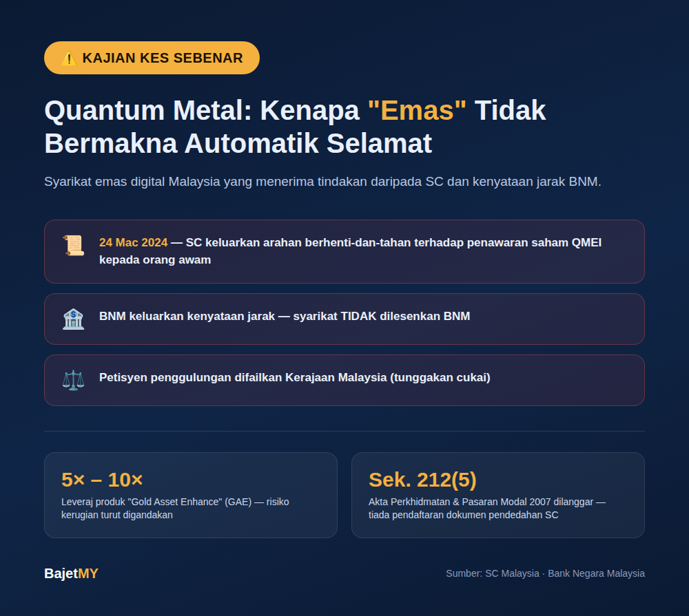

Emas selalu dianggap pelaburan "selamat" — sesuatu yang tangible, stabil, dan tidak seperti skim pelaburan meragukan yang lain. Itulah sebabnya kes Quantum Metal penting dikongsi: ia menunjukkan bagaimana naratif "emas" boleh digunakan untuk membungkus produk yang akhirnya menerima tindakan daripada dua pihak berkuasa kewangan utama Malaysia — Suruhanjaya Sekuriti (SC) dan Bank Negara Malaysia (BNM).
Apa itu Quantum Metal?
Quantum Metal Sdn Bhd ialah syarikat Malaysia yang beroperasi sejak 2012, memasarkan diri sebagai salah satu pengedar emas digital terbesar di negara ini. Modelnya: pelabur "melabur" dalam emas tanpa memegang emas fizikal — syarikat menyimpan dan menguruskannya bagi pihak pelabur. Ia adalah anak syarikat milik penuh Quantum Metal Exchange Inc (QMEI), yang didagangkan di pasaran OTC Amerika Syarikat.
Produk unggulannya, Gold Asset Enhance (GAE), menawarkan pendedahan emas berleveraj — GAE 5× dan GAE 10× — bermakna pelabur didedahkan kepada pergerakan harga emas 5 hingga 10 kali ganda daripada modal sebenar mereka.
Tindakan pihak berkuasa
Suruhanjaya Sekuriti Malaysia (SC) mengeluarkan arahan berhenti-dan-tahan (cease and desist) pada 24 Mac 2024 terhadap Dato' Lim Khong Soon @ Lim Hock Seng, Pengasas dan Pengarah QMEI. Arahan ini mengarahkan penawaran saham QMEI kepada orang awam Malaysia — termasuk melalui platform/laman web Quantum Metal Sdn Bhd kepada ahli QMSB — dihentikan serta-merta. Sebabnya: penawaran saham dibuat tanpa mendapatkan pengiktirafan dan mendaftar dokumen pendedahan dengan SC, melanggar Seksyen 212(5) Akta Perkhidmatan dan Pasaran Modal 2007.
Bank Negara Malaysia (BNM) turut mengeluarkan kenyataan menjauhkan diri daripada dakwaan berkaitan Quantum Metal Sdn Bhd, mengesahkan syarikat ini tidak dilesenkan oleh BNM untuk menjalankan aktiviti kewangan berkaitan.
Secara berasingan, satu petisyen penggulungan (winding-up) turut difailkan oleh Kerajaan Malaysia terhadap Quantum Metal Sdn Bhd pada akhir 2024 berikutan tunggakan cukai — walaupun petisyen ini kemudiannya dalam proses ditarik balik pada awal 2025 selepas syarikat mencapai persetujuan bayaran ansuran dengan Lembaga Hasil Dalam Negeri. Isu ini berkaitan cukai, bukan bukti langsung penipuan pelaburan — tetapi ia menambah kepada gambaran ketidakstabilan operasi syarikat pada masa berkenaan.
Penting: Arahan SC dan kenyataan BNM berkaitan spesifik dengan penawaran saham QMEI dan status lesen — ini bukan penghakiman mahkamah bahawa keseluruhan model perniagaan Quantum Metal adalah penipuan. Namun, ia adalah tanda amaran serius yang wajar membuatkan mana-mana pelabur berhenti dan menyemak sebelum meneruskan.
Pengajaran untuk pelabur
1. "Emas" adalah naratif, bukan jaminan keselamatan Produk berbungkus emas kekal tertakluk kepada struktur pelaburan sebenar di sebaliknya. GAE 5×/10× adalah produk leveraj tinggi — risiko kerugian turut digandakan sama seperti potensi keuntungan.
2. Syarikat lama & besar tidak semestinya berlesen untuk setiap produk Quantum Metal telah beroperasi sejak 2012 dan mendakwa menjadi pengedar emas terbesar — tetapi ini tidak bermakna setiap produk pelaburan yang ditawarkan automatik berlesen. Lesen perlu disemak produk demi produk, bukan berdasarkan reputasi syarikat induk sahaja.
3. Semak status di SC dan BNM sebelum, bukan selepas Kedua-dua SC (untuk produk sekuriti/saham) dan BNM (untuk aktiviti kewangan berlesen) menyediakan senarai amaran awam. Sentiasa semak sebelum melabur, bukan selepas membaca berita.
4. Produk leveraj tinggi memerlukan pemahaman risiko yang lebih mendalam Sebarang produk yang menawarkan pendedahan 5× hingga 10× ganda modal membawa risiko kerugian yang jauh lebih besar berbanding pelaburan emas fizikal konvensional. Ini bukan produk untuk pelabur yang tidak faham sepenuhnya mekanisme leveraj.
Cara semak sebelum melabur dalam produk emas/logam berharga
- Semak Senarai Amaran Pelabur (Investor Alert List) di laman rasmi SC Malaysia
- Semak status lesen di laman rasmi BNM (Financial Consumer Alert)
- Baca dengan teliti sama ada produk itu emas fizikal, emas digital, atau derivatif berleveraj — ketiga-tiganya profil risiko yang sangat berbeza
- Jangan anggap "semua orang pun invest" sebagai bukti kesahihan
- Tanya soalan spesifik: siapa penyimpan emas sebenar, adakah ia diaudit secara bebas, dan apa jaminan jika syarikat menghadapi masalah kewangan
Ringkasan
Kes Quantum Metal — arahan berhenti-dan-tahan SC pada Mac 2024, kenyataan jarak BNM, dan petisyen penggulungan berkaitan cukai — adalah peringatan bahawa naratif "emas" atau "aset tangible" tidak bermakna produk pelaburan automatik selamat atau berlesen sepenuhnya. Sentiasa semak status lesen produk pelaburan secara khusus di SC dan BNM sebelum melabur, terutamanya untuk produk berleveraj tinggi seperti GAE 5×/10×.
Sumber
- Suruhanjaya Sekuriti Malaysia — Media Release, "SC Issues Cease and Desist Directive Against Quantum Metal Exchange Inc for Offering Shares to Public" (24 Mac 2024)
- Bank Negara Malaysia — Statement on Claims Relating to Quantum Metal Sdn. Bhd.